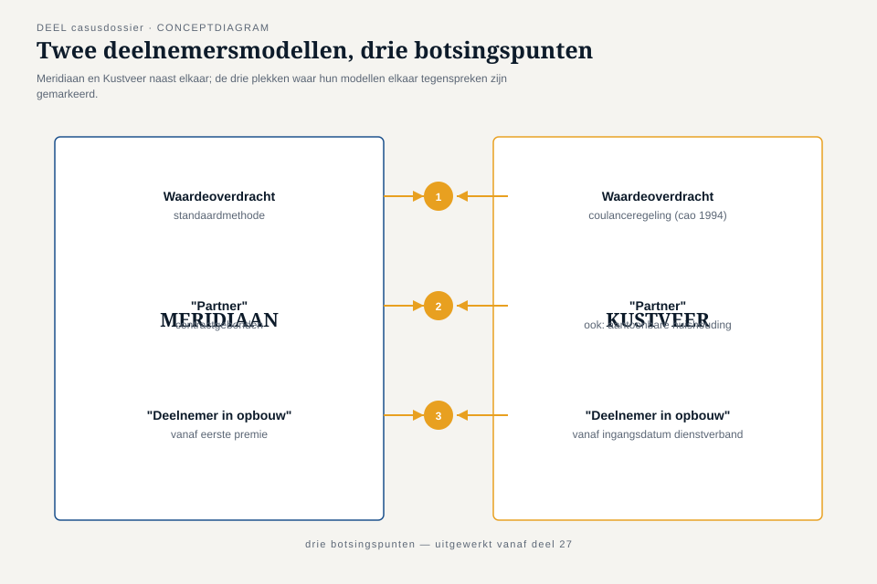
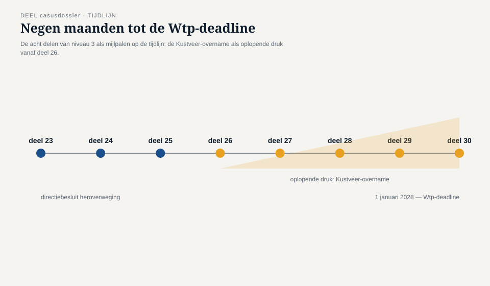

Casusdossier niveau 3 — De Stelselovergang en de overname van Pensioenfonds Kustveer
Ductus-cursus Domain-Driven Design · niveau 3 (expert) · behorend bij deel 23 t/m 30
Dit dossier hoort bij niveau 3 van de cursus Domain-Driven Design. Het is zelfstandig leesbaar: kennis van niveau 1 en 2 is nuttig maar niet vereist. Waar naar eerdere niveaus wordt verwezen, gebeurt dat met voldoende context om ook zonder die niveaus te kunnen volgen. De regelgeving die in dit dossier wordt genoemd — de Wet toekomst pensioenen en de daaruit voortvloeiende verplichtingen bij DNB en AFM — is feitelijk correct voor zover benoemd; de organisatie Meridiaan Pensioen, Pensioenfonds Kustveer en alle personages blijven fictief.
1. Waar we staan
Het Programma Mutatieplatform uit niveau 2 is afgerond. Het complete Meridiaan-landschap — KERN, Werkgeversportaal, Mutatieplatform, Nabestaandenloket, Wegwijzer — is voor het eerst expliciet in kaart gebracht: vijf systemen, een kerndomeinkeuze, zeven context-mappingpatronen op acht relaties, een teamtopologie. Dat werk was geen doel op zich. Het was de voorbereiding op iets dat toen nog aan de horizon lag en nu niet meer te ontwijken is: de Stelselovergang.
De Wet toekomst pensioenen (Wtp) verplicht Meridiaan om, samen met de fondsen waarvan zij de uitvoering verzorgt, uiterlijk op 1 januari 2028 over te gaan op het nieuwe pensioenstelsel. Opgebouwde aanspraken worden dan “ingevaren”: omgezet naar de nieuwe regeling, in één bewerking, voor meer dan een miljoen deelnemers. Wat in niveau 2 nog een architecturale discipline was — grenzen trekken, taal expliciet maken, patronen kiezen — wordt in niveau 3 een operatie met een onomkeerbare deadline. Een grens die verkeerd getrokken is, is na 1 januari 2028 niet meer gratis te herstellen; hij zit in het pensioen van een echt persoon.
Middenin die operatie, negen maanden vóór de deadline, neemt Meridiaan een besluit dat niets met de Wtp op zich te maken heeft, maar er wel door wordt aangejaagd: om voldoende schaal te hebben vóór het stelsel definitief sluit voor nieuwe toetreders, neemt Meridiaan Pensioenfonds Kustveer over — een klein, zelfstandig fonds voor werknemers in de kustvaart en veerdiensten, dat op eigen kracht de transitie niet tijdig en niet betaalbaar kan uitvoeren. Dat besluit is bestuurlijk en actuarieel al genomen tegen de tijd dat dit niveau begint. Wat nog niet is opgelost, is de vraag die dit hele niveau draagt: hoe voegt een architect twee deelnemersmodellen samen die van elkaar verschillen op precies de plekken waar het er het meest toe doet, binnen een tijdsbestek dat voor uitstel geen ruimte laat?
2. De Stelselovergang, kort en feitelijk
Drie documenten zijn wettelijk verplicht bij een invaren-transitie, elk met een eigen adressant:
- Het transitieplan, opgesteld door de sociale partners van elk aangesloten fonds — voor Meridiaan een gegeven input, geen eigen product.
- Het implementatieplan, in te dienen bij DNB, waarin Meridiaan als uitvoerder beschrijft hoe zij de transitie uitvoert — met een wettelijk verplicht onderdeel over hoe de kwaliteit van de data wordt geborgd, vóór, tijdens en na de overgang.
- Het communicatieplan, in te dienen bij de AFM, over hoe deelnemers worden geïnformeerd.
Indieningstermijn: uiterlijk één jaar vóór de transitiedatum. Meridiaan hanteert 1 januari 2028.
Voor deze cursus is dat regelgevende kader achtergrond, geen hoofdonderwerp — DDD behandelt niet hóe je een implementatieplan schrijft, maar hoe je het domeinmodel bouwt en verdedigt waar dat plan op steunt. Eén gevolg van de regelgeving is wél overal in dit niveau voelbaar: het implementatieplan moet expliciet maken hoe datakwaliteit geborgd is, en een deelnemersmodel dat je niet scherp hebt afgebakend, kun je niet betrouwbaar op datakwaliteit toetsen. Strategisch ontwerp is hier geen academische exercitie — het is de voorwaarde om bij DNB uit te leggen dat je weet wat je invaart.
Voor de docent en de deelnemer: deze cursus behandelt de domeinmodelleringskant van dit traject. Zij is geen actuariële, juridische of fiscale opleiding en vervangt geen advies van een pensioenjurist of actuaris. Bedragen, percentages en regelingdetails in de casus zijn fictief en uitsluitend illustratief.
3. De overname: Pensioenfonds Kustveer
Pensioenfonds Kustveer is een fictief, zelfstandig bedrijfstakpensioenfonds voor circa 14.000 deelnemers, opgericht in de jaren zeventig voor werknemers van kustvaart-, veer- en loodsdiensten — een sector met veel kleine werkgevers, wisselende dienstverbanden en, meer dan bij Meridiaans eigen achterban, een traditie van langdurig samenwonende partners zonder geregistreerd partnerschap. Kustveer is klein genoeg gebleven om nooit een eigen grootschalige moderniseringsslag te hoeven maken: de polisadministratie draait op een systeem uit de jaren negentig dat sindsdien alleen is gepatcht, een deel van de oudste dossiers bestaat nog altijd (mede) op basis van gescande papieren originelen, en het fonds heeft, tot de overname, nooit de noodzaak gevoeld zijn deelnemersmodel expliciet te maken — het zat, net als bij KERN in niveau 2, in code en in de hoofden van een klein, hecht team.
Dat model is op drie punten onverenigbaar met dat van Meridiaan, en geen van de drie is triviaal recht te trekken:
- Waardeoverdracht. Kustveer hanteert, als erfenis van een cao-afspraak uit de jaren negentig die nooit is herzien, een eigen, coulantere rekenmethode voor waardeoverdracht bij baanwisseling binnen de sector — gunstiger voor de deelnemer dan de standaardmethode die Meridiaan voor zijn eigen fondsen hanteert. Eén-op-één overnemen van Meridiaans methode benadeelt een deel van de Kustveer-deelnemers; domweg Kustveers methode overnemen voor het hele Meridiaan-landschap is actuarieel niet te verantwoorden op die schaal.
- “Partner.” Meridiaans model kent partnerschap toe op basis van huwelijk, geregistreerd partnerschap, of een notarieel samenlevingscontract — een heldere, sluitende definitie die in niveau 1 en 2 als vanzelfsprekend gold. Kustveer kent, uit erkenning van de sectorpraktijk, óók partnerschap toe op basis van een aantoonbare gezamenlijke huishouding zonder contract, vastgesteld via een eigen, informeel toetsingsproces. Twee correcte, intern consistente definities van hetzelfde woord — en een deelnemer die onder de ene definitie een partner heeft en onder de andere niet.
- “Deelnemer in opbouw.” Meridiaan rekent iemand pas als deelnemer in opbouw vanaf de eerste feitelijk verwerkte pensioenpremie. Kustveer rekent iemand al vanaf de wettelijke ingangsdatum van het dienstverband, ook als de eerste premieverwerking door de administratieve doorlooptijd van kleine werkgevers in de sector pas weken later plaatsvindt — een verschil dat bij een reguliere baanwisseling zelden opvalt, maar bij een stelselovergang met een harde peildatum direct telt.
Bij dat model komt eigen historische data: dossiers die deels op scans steunen, mutatiehistorie die nooit door een vergelijkbare correctieslag is gegaan als Meridiaans eigen landschap in niveau 1 en 2, en een deelnemersadministratie die nooit is getoetst tegen een extern, expliciet gemaakt model.
De opdracht die op Daan Kuipers bord landt, is niet “bouw een koppeling.” Het is een context-mappingbesluit met een deadline: voegen Meridiaan en Kustveer hun deelnemersmodel samen tot één, gedeeld model (shared kernel), laat Kustveer via een anti-corruption layer aansluiten zonder het bestaande kernmodel te vervuilen met Kustveers uitzonderingen, of laat Kustveer voorlopig, tot ná 1 januari 2028, als conformist meelopen op Meridiaans model — met het risico dat een deel van de Kustveer-deelnemers tijdelijk, of blijvend, in een voor hen ongunstiger regeling terechtkomt. Elke optie heeft een prijs. Geen optie is gratis, en geen optie is voor iedereen gelijk gunstig.

4. Personages
Daan Kuiper — hoofdpersoon. Was in niveau 1 een developer zonder domeinkennis, groeide in niveau 2 tot de domeinmodelleur van het complete Meridiaan-landschap. In niveau 3 is hij architect: verantwoordelijk voor het domeinmodel waarop het implementatieplan steunt, en — vanaf deel 26 — voor het context-mappingbesluit over Kustveer. Wat hij in niveau 2 leerde over grenzen tussen vijf systemen binnen dezelfde organisatie, moet hij nu toepassen op een grens tussen twee organisaties met elk hun eigen geschiedenis, hun eigen bestuur en hun eigen gelijk.
Iris Tanghe — was programmadirecteur van het Programma Mutatieplatform in niveau 2, nu programmadirecteur voor de volledige Stelselovergang. Eindverantwoordelijk voor de deadline van 1 januari 2028 en, sinds de overname, ook voor de integratie van Kustveer binnen die deadline. Degene die Daan er in deel 28 hard aan herinnert dat “op tijd” en “goed” niet automatisch hetzelfde antwoord opleveren, en dat zij van hem wil horen welk van de twee hij verdedigt als ze moeten kiezen.
Vera Almeida — architect van KERN. Haar ervaring met een systeem dat al drie moderniseringspogingen heeft overleefd, maakt haar in dit niveau de stem die er het eerst op wijst dat Kustveer voor Meridiaan is wat KERN ooit was vóór niveau 2: een systeem waarvan de kennis in code en hoofden zit, niet in een gedeeld model. Speelt in deel 24 een sleutelrol bij het saneren van KERN zelf, als voorbereiding op wat er met Kustveer moet gebeuren.
Karsten Rooijakker — architect van het Werkgeversportaal, draagt nog altijd het litteken van het mislukte WGP 2.0-programma met zich mee. In dit niveau is hij de stem die bij elke integratiekeuze blijft vragen wie de kosten draagt als het misgaat — een vraag die bij de Kustveer-overname zwaarder weegt dan ooit, omdat “misgaan” hier kan betekenen: een deelnemer met het verkeerde pensioen.
Otto Feenstra — developer op het Mutatieplatform. Pragmatisch en ongeduldig, en in dit niveau degene die het hardst aandringt op een snelle, technische oplossing voor de Kustveer-integratie — tot hij in deel 25 zelf tegen de grenzen van die aanpak aanloopt bij het samenvoegen van twee datastromen die niet gelijktijdig, foutloos consistent te maken zijn.
Priya Chandra — productlead van Wegwijzer. Kustveer-deelnemers moeten, ná de overname, ook hun eigen pensioensituatie kunnen inzien in Wegwijzer — wat haar confronteert met de vraag of Wegwijzer, dat tot nu toe alleen Meridiaans eigen model toont, een tweede, afwijkend deelnemersmodel eerlijk kan weergeven zonder de gebruiker te verwarren.
Foppe Sijbesma — extern ingehuurde DDD-coach, terug uit niveau 2. Begeleidt Daan en het team methodisch door de zwaarste besluiten van dit niveau, zonder zelf inhoudelijke keuzes over het Meridiaan- of Kustveer-domein te maken. Zijn vaste zin (“ik ken jullie domein niet, ik ken alleen de vragen die je jezelf nog niet hebt gesteld”) krijgt in dit niveau een scherpere lading: hij kent, na de overname, ook Kustveers domein niet — en weigert net zo hard om namens hen te spreken als namens Meridiaan.
Willemijn Brugman — senior medewerker Nabestaandenzaken, bekend uit niveau 1. Keert kort terug in deel 27, omdat de nieuwe partnerdefinitie van Kustveer rechtstreeks raakt aan het Nabestaandenloket-model dat zij mee opbouwde: een deelnemer met een Kustveer-partnerschap zonder contract die overlijdt, is precies het soort geval waarvoor het Nabestaandenloket-model in niveau 1 nog geen ruimte had.
Nieuw voor niveau 3, rond de overname
Youssef Aït Idar — architect van Pensioenfonds Kustveer, sinds elf jaar de enige met een compleet overzicht van het Kustveer-systeem. Niet vijandig tegenover de overname, maar wel scherp beschermend: voor hem is elk voorstel om Kustveers model klakkeloos in Meridiaans model te persen een voorstel om veertien jaar zorgvuldig opgebouwde uitzonderingen — elk met een reden, geen van alle toevallig — weg te vagen omdat ze “niet in de standaard passen.” Zijn terugkerende vraag aan Daan: “Vertel me eerst welk probleem van óns jullie model oplost, voordat je vertelt welk probleem van jullie het onze veroorzaakt.”
Loes Verstappen — bestuurslid van Pensioenfonds Kustveer, blijft na de overname aan als vertegenwoordiger van de voormalige Kustveer-deelnemers binnen het gecombineerde bestuur. Draagt de verantwoordelijkheid om, namens 14.000 mensen die niet zelf aan tafel zitten, te beoordelen of een voorgesteld context-mappingbesluit hun belangen eerlijk weegt — een rol die in deel 30 een van de vier stoelen van de boardsimulatie bezet.
Thijs Okkerse — actuaris, aangetrokken om de financiële gevolgen van elk van de drie context-mappingopties (shared kernel, anti-corruption layer, tijdelijk conformist) door te rekenen voor beide deelnemerspopulaties. Zijn cijfers zijn geen bijzaak bij het architectuurbesluit — ze zíjn een deel van het besluit, en Daan leert in deel 27 dat een technisch elegante oplossing die actuarieel onhoudbaar is, geen oplossing is.
Sigrid Palm — vertegenwoordiger van DNB, betrokken vanaf het moment dat de overname en de gevolgen voor het implementatieplan bij de toezichthouder worden gemeld. Stelt geen vragen over patronen of aggregates — haar taal is die van risico, verantwoording en aantoonbare datakwaliteit — en dwingt het team daarmee, net als de compliance-adviseur in niveau 2 deel 22, om een architecturale keuze te vertalen naar een taal die buiten het team zelf overtuigt. Bezet de tweede nieuwe stoel in de boardsimulatie van deel 30.
5. Het narratieve verloop van niveau 3
Niveau 3 volgt Daan door de laatste negen maanden vóór 1 januari 2028, met de Kustveer-overname als een druk die vanaf deel 26 steeds zwaarder op het landschap komt te liggen.
- Deel 23 — De Stelselovergang is officieel van start. Daan moet, vóórdat de overname ter sprake komt, eerst het bestaande Meridiaan-landschap uit niveau 2 heroverwegen: is de kerndomeinkeuze van toen — het Mutatieplatform als kerndomein — nog houdbaar nu de hele organisatie zich richt op één onomkeerbare operatie, of verschuift het kerndomein zelf onder de druk van de transitie? Dit deel is bewust grotendeels zelfstandig leesbaar: het opent niveau 3 zonder de overname als vereiste voorkennis, en sluit af met het eerste, nog vage bericht dat het bestuur “een overnamekans in de sector” onderzoekt.
- Deel 24 — Het team saneert, vooruitlopend op wat er met een tweede, extern model moet gebeuren, eerst zijn eigen grootste bron van modelvervuiling: de oudste, minst doorzichtige lagen van KERN, met de strangler fig en de anti-corruption layer als saneringsstrategie. Vera Almeida trekt dit deel.
- Deel 25 — Bij de daadwerkelijke invaaroperatie moeten grote datavolumes tegelijk, over meerdere systemen, consistent worden gemaakt. Het team behandelt eventual consistency en sagas conceptueel — geen implementatiedetail, maar een strategisch antwoord op de vraag welke consistentiegarantie een invaaroperatie werkelijk nodig heeft. Otto loopt hier tegen de grenzen van zijn eigen tempo-gedreven instinct aan.
- Deel 26 — Het bestuur bevestigt: Meridiaan neemt Pensioenfonds Kustveer over. Het team behandelt, nog vóórdat het Kustveer-model in detail bekend is, hoe je een domeinmodel dat door meerdere teams wordt gedragen, bewaakt tegen taal-drift over de tijd — een vraardigheid die onmiddellijk relevant wordt zodra er een tweede organisatie, met een eigen taal, bij het landschap komt.
- Deel 27 — Kustveers model ligt op tafel, met Youssef, Loes en Thijs erbij: de drie botsingspunten uit paragraaf 3 in volle omvang. Het kernonderwerp van niveau 3: DDD in fusie en organisatieverandering, twee modellen die één landschap moeten delen. Willemijn keert kort terug vanwege de partnerdefinitie.
- Deel 28 — Onder toenemende tijdsdruk, en met Sigrid Palm die namens DNB meekijkt, moet het team leren wanneer je géén DDD-oplossing forceert: soms is de onderbouwde conclusie dat een volledige samenvoeging vóór de deadline niet verantwoord is, en dat een tijdelijke, expliciet beargumenteerde conformist-relatie de eerlijkere keuze is dan een gehaaste shared kernel. Iris confronteert Daan met de vraag welk van de twee — op tijd of goed — hij durft te verdedigen.
- Deel 29 — Het team oefent de echte vorm van de CPSA-A-capstone: taakkeuze na een fictieve NDA, schriftelijke uitwerking, mondelinge verdediging voor twee rollen — met het Kustveer-vraagstuk als oefenmateriaal, zodat de opbouw naar de masterproef in deel 30 niet als verrassing komt.
- Deel 30 — Masterproef (twee dagdelen) — De boardsimulatie. Daan verdedigt zijn context-mappingbesluit over de Kustveer-integratie voor vier rollen: bestuur (Loes Verstappen), actuaris (Thijs Okkerse), DNB-vertegenwoordiger (Sigrid Palm) en de architect van het overgenomen fonds (Youssef Aït Idar). Vragen half vooraf gedeeld, half onvoorzien. De rubric beloont een onderbouwd “nee, niet volledig samenvoegen — nog niet, of nooit” hoger dan een oppervlakkig “ja, één groot systeem is toch simpeler.”
Aan het eind van niveau 3 sluit de cursusboog terug op deel 1: dezelfde complexiteitstoets waarmee de cursus opende, nu toegepast op de vraag of twee fondsen wel of niet één model moeten worden — niet als herhaling, maar als bewijs dat het instrument op elke schaal, van één subdomein tot een fusie tussen twee organisaties, dezelfde discipline vraagt.

6. Gebruik van dit dossier
- Dit dossier wordt in deel 23 in zijn geheel uitgereikt.
- Per deel komen er kleine dossierstukken bij: bestuursnotities, fragmenten uit het implementatieplan, Kustveer-dossiervoorbeelden, EventStorming-aantekeningen. Die staan in het werkboek van het betreffende deel, niet hier.
- Gegevens in dit dossier zijn fictief maar onderling consistent, en bouwen voort op niveau 1 en 2 zonder dat die niveaus gelezen hoeven te zijn. Latere delen mogen op dit dossier voortbouwen; docenten passen het niet stilzwijgend aan.